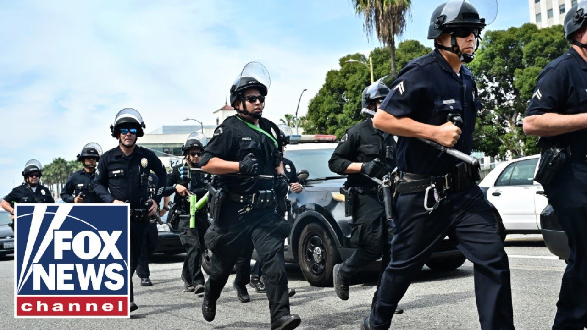

【突发新闻：洛杉矶反特朗普抗议者与警方发生冲突】
Summary: The reporter provides a live update on violent clashes between anti-Trump protesters and police in downtown LA, detailing the use of tear gas, rubber bullets, and flashbangs to disperse the crowd. The situation remains volatile, with protesters ignoring curfew orders, and the mayor's calls for peace going unheeded.
摘要： 记者现场报道了洛杉矶市中心反特朗普抗议者与警方之间的暴力冲突，详细描述了警方使用催泪瓦斯、橡皮子弹和闪光弹驱散人群的情况。局势仍然不稳定，抗议者无视宵禁命令，市长呼吁和平的言论未被理睬。

⏱️ Estimated Reading Time: 26 min
📚 六级生词 📚 雅思生词 📚 托福生词 📚 专八生词 📚 SAT生词 📚 考研生词 📚 GRE生词 📚 高考生词
All right, we're going to turn back now to the riots in Los Angeles.
好的，我们现在将镜头转回洛杉矶的骚乱现场。
Police are trying to push back rioters as they throw bottles at officers.
警方试图击退向警察投掷瓶子的抗议者。
Law enforcement was forced to use tear gas to protect themselves against these protesters.
执法人员被迫使用催泪瓦斯以保护自己免受抗议者的攻击。
Christina Coleman is live with the latest for us.
克里斯蒂娜·科尔曼正在现场为我们带来最新报道。
Hi again, Christina.
再次问好，克里斯蒂娜。
Hi. Yeah, they were throwing bottles, rocks, concrete, boulders, uh commercial grade fireworks, and you can see um officers, they still have a protective line here to to try and stop the crowd from going any further.
你好。是的，他们投掷瓶子、石块、混凝土、巨石，还有商业级烟花，你可以看到警察仍在这里设置防线，试图阻止人群进一步推进。
We've come to a point where you see these vehicles here.
我们现在到达了一个地点，你可以看到这些车辆。
You can see cars who have been driving down along this this way here in downtown LA.
你可以看到车辆沿着洛杉矶市中心的这条路行驶。
I imagine there's some confusion because uh this curfew it goes into effect in about a half hour and you still have a lot of people down here and different points are closed off again as police, law enforcement, sheriff's deputies as they do they the the best that they can to try to prevent any further violence.
我想这里有些混乱，因为宵禁大约半小时后生效，但这里仍有很多人，警方、执法人员和县警副手们正在尽力封锁不同地点，以防止进一步的暴力事件。
Again, since last Saturday, uh there have been more than 500 arrests related to protest activity.
再次强调，自上星期六以来，已有超过500人因抗议活动被捕。
Most of them for failure to disperse, but you did have uh those those the violence up there.
其中大多数是因为拒绝疏散，但也有暴力行为发生。
Again, you can see law enforcement.
再次强调，你可以看到执法人员。
So, they continue to shift.
他们仍在不断调整部署。
They continue to move because it's a very fluid situation out here.
他们继续移动，因为现场情况非常不稳定。
Every now and then, you have people just tossing, hurling objects at them.
时不时有人向他们投掷物品。
Uh moments before I came on air, we heard fireworks again.
在我开始直播前，我们又听到了烟花声。
Uh so, can I imagine those were probably lobbed and hurled at law enforcement.
所以，我猜那些可能是投向执法人员的。
So, again, they they block off that area.
他们再次封锁了那个区域。
They do what they can.
他们尽力而为。
At times, they had had to disperse tear gas.
有时他们不得不使用催泪瓦斯。
Uh they've also dispersed those rubber bullets to clear out the crowd.
他们还发射了橡皮子弹以驱散人群。
So they're they're shouting hold here.
他们喊着“坚守这里”。
You can tell they're they're they're doing their best communicating trying to hold the line here to prevent any further violence.
可以看出他们正在尽力沟通，试图守住防线以防止进一步的暴力。
And as we wait as we wait for this curfew to go into effect, but even before that again uh there was a an order uh a dispersal order for the crowd because of the violence that erupted hours ago.
在我们等待宵禁生效的同时，几小时前因暴力事件爆发，已经发布了疏散命令。
And so people have been told to leave this area, leave immediately.
人们被告知立即离开该地区。
And you can see them disobeying law enforcement.
你可以看到他们不服从执法人员的命令。
So, um I'm going to I'm moving along with my photographer here.
所以，我和我的摄影师正在移动。
And so, so you can just see this is what we've been doing off and on uh for hours.
你可以看到这是我们几个小时以来断断续续在做的事情。
We've been moving all throughout downtown as these as as protesters continue to move around in different areas.
我们一直在市中心移动，而抗议者也在不同区域活动。
Uh I saw them getting together in what looked like a little parking area between a couple of buildings and law enforcement cleared that out pretty quickly.
我看到他们聚集在几栋建筑之间的一个小停车场，执法人员很快将其清空。
They're they're like, "You need to go."
他们说：“你们必须离开。”
And of course, you know, they don't want people to get together and and communicate and and possibly cause mayhem, especially with this being such a volatile and unpredictable situation.
当然，他们不希望人们聚集、交流并可能引发混乱，尤其是在这种不稳定和不可预测的情况下。
So, that is what we're seeing here.
这就是我们在这里看到的情况。
And again, um you you have so many people here, the protesters who are um they're calling for ICE to be abolished.
再次强调，这里有很多抗议者，他们呼吁废除ICE。
They are calling for the immigration raids to stop.
他们要求停止移民突袭行动。
That is what they want.
这就是他们的诉求。
But that messaging uh you don't hear it amid all of this violence here.
但在所有这些暴力中，你听不到这些诉求。
So, I'm standing here.
所以，我站在这里。
You can see the police here.
你可以看到警察在这里。
They're doing their best they can.
他们正在尽力而为。
I've moved just about a block since we've been doing this live shot.
自从我们开始直播以来，我已经移动了大约一个街区。
Been moving all around downtown and you have a lot of protesters still here.
我们一直在市中心移动，这里仍有很多抗议者。
Again, we're a half hour from that curfew going into effect as we're a mile around downtown LA.
再次强调，距离宵禁生效还有半小时，我们在洛杉矶市中心一英里范围内。
Are you okay, Andy?
安迪，你还好吗？
I'm going to I'm going to continue to stay in the street here.
我将继续留在街上。
You guys watch for me so I don't hit anything.
你们帮我看着点，别让我撞到东西。
So, I'm Let's stop here.
所以，我们停在这里。
Let's stop here.
就停在这里。
So Andy, if you can pan back behind me, look at this this line of police vehicles.
安迪，如果你能把镜头转向我身后，看看这一排警车。
You see that reinforcement here.
你可以看到增援力量。
They have been some of these officers.
其中一些警员。
They've been on horseback.
他们骑着马。
They're they're in their patrol cars.
他们在巡逻车里。
They're in patrol units.
他们在巡逻队中。
They're here on the ground.
他们在地面上。
They're doing all that they can.
他们正在尽一切努力。
I mean, this this area, there is such a huge law enforcement presence in downtown ahead of this curfew going into effect for them to try and keep this area safe.
我的意思是，在宵禁生效前，市中心有大量执法人员，他们试图确保该地区的安全。
Back to you, Christina.
交还给你，克里斯蒂娜。
If I can just ask you, we talked a little bit about the arrest that happened since last Saturday and you told me a little bit about the strategy.
我想问你，我们刚才谈到了自上星期六以来的逮捕情况，你也提到了一些策略。
You know, can you imagine if all of a sudden police officers started arresting people right now would erupt in chaos.
你能想象如果警察现在突然开始逮捕人，会引发混乱吗？
Um, but these protesters also cover their faces because they don't want to be able to be identified later.
这些抗议者还遮住脸，因为他们不想被事后识别。
And Attorney General Pam Bondi has said, "We will come after you. We will find you."
司法部长帕姆·邦迪说：“我们会追查你们，我们会找到你们。”
And as a matter of fact, they've gotten a few of the organizers.
事实上，他们已经抓到了几名组织者。
Um, are there people still out in the streets?
还有人留在街上吗？
Because we can see the backs of the cops, but we can't see the protesters.
因为我们能看到警察的背影，但看不到抗议者。
Are they still all covered up and trying to hide their identities, right?
他们仍然遮着脸，试图隐藏身份，对吧？
Well, a a great deal of them are.
是的，很多人是这样。
And I can tell you this, what what Pam Bonnie was saying and and what uh the sheriff reiterated yesterday is when people are breaking the law, when they're committing these acts of violence, they might not be arrested immediately, but they said that arrest will likely come because even if they try to cover their face out here, there are so many uh surveillance cameras.
我可以告诉你，帕姆·邦迪和警长昨天重申的是，当人们违法或实施暴力行为时，他们可能不会立即被捕，但他们说逮捕很可能会到来，因为即使他们试图遮住脸，这里有很多监控摄像头。
There are people recording things on social media.
有人在社交媒体上记录一切。
I mean, law enforcement investigators, they're going to comb through all this evidence and they're going to find people who are are causing destruction down here.
执法调查人员将梳理所有这些证据，找到在这里制造破坏的人。
Um, they're right now LAPD Central Division, they they just put on X a message.
洛杉矶警察局中央分局刚刚在X上发布了一条消息。
They said to our downtown LA businesses and residents, please report any criminal activity to LAPD Central Division.
他们对洛杉矶市中心的企业和居民说，请向洛杉矶警察局中央分局报告任何犯罪活动。
Any damage or vandalism should be safely documented.
任何损坏或破坏行为都应安全记录。
So, they're they're calling on uh the local business partners out here.
他们呼吁当地企业合作伙伴。
They're calling on people who have access to surveillance cameras to turn all that evidence in because they're going to comb through it and they're going to look for the people who have been lobbing, you know, concrete and and boulders, rocks, uh, commercial grade fireworks at law enforcement.
他们呼吁拥有监控摄像头的人提交所有证据，因为他们将仔细检查，寻找那些向执法人员投掷混凝土、巨石、石块和商业级烟花的人。
They say, uh, those perpetrators will be arrested and and prosecuted and and face the fullest extent of the law.
他们说，这些肇事者将被逮捕、起诉，并面临法律的严惩。
And back to you.
交还给你。
That'll be very interesting, Christina, to see how that plays out.
克里斯蒂娜，看看事情如何发展会很有趣。
You know, I I specifically was looking at that tweet from the LAPD central division and we're now 25 minutes from that curfew kicking in and with the protesters on the march, we don't know for sure what will happen, but it is likely that things will escalate.
我特别关注了洛杉矶警察局中央分局的推文，现在距离宵禁生效还有25分钟，抗议者仍在游行，我们不确定会发生什么，但情况可能会升级。
And the businesses, the impact on downtown LA businesses has been pretty significant, it seems.
对洛杉矶市中心企业的影响似乎相当严重。
From vandalism all the way to in some cases looting.
从破坏到在某些情况下的抢劫。
That's right.
没错。
You know, I I stopped by a gas station this week and just just to fill up and the I'm not sure if the guy was the owner, but he told me that he had a relative who had a business down here and that his business was was just torn up and how devastated he was and how he thought it was the estimate was about $50,000 in damages.
这周我在一个加油站停下来加油，不确定那个人是不是老板，但他告诉我他有一个亲戚在这里有生意，生意被毁了，他非常沮丧，估计损失约5万美元。
I mean, this has just been such a tough year for LA.
对洛杉矶来说，这是非常艰难的一年。
You've got the fires and and now you've got this and and and it's it's just so unclear when all of this will come to an end.
有火灾，现在又有这个，这一切何时结束还不清楚。
You know, we've seen those some of those peaceful pro protests throughout the week.
这周我们看到了一些和平的抗议活动。
I know we were all hoping for it today.
我知道我们今天都希望如此。
You know, you had that massive uh what organizers called No Kings Day protest here in downtown LA.
你知道，组织者称之为“无国王日”的大规模抗议活动在洛杉矶市中心举行。
Thousands and thousands of people showed up and and and for hours it was relatively calm.
成千上万的人参加，几个小时内相对平静。
It was relatively peaceful.
相对和平。
And we're walking away and then all of a sudden we're getting these alerts that a a issue a dispersal order had been issued.
我们离开后，突然收到疏散命令的警报。
And I'm like, what happened?
我想，发生了什么？
What's going on?
怎么回事？
And it's because of this violence.
是因为这种暴力。
We didn't have to go far to see people lobbing things at law enforcement, throwing bottles at law enforcement.
我们不用走多远就能看到人们向执法人员投掷物品和瓶子。
And now you have this them shifting downtown.
现在他们转移到市中心。
And if you pan straight ahead of you, you could see even more law enforcement there.
如果你向前看，可以看到更多的执法人员。
So they're blocking off different points, different intersections to try and control the crowd, try and keep people moving along.
他们封锁不同的地点和路口，试图控制人群，让人们继续移动。
And then every now and then, you'll just see people break out running, lots of protesters.
时不时你会看到人们突然跑起来，很多抗议者。
Right now in this intersection there were there was a huge crowd, but as you could see, uh it it it's gone.
现在在这个十字路口曾有一大群人，但如你所见，他们已经散去。
And thi this uh is a testament to law enforcement and how they are operating.
这证明了执法部门的运作方式。
They have a method here where they are moving slowly.
他们有一种方法，慢慢地移动。
They're they're moving the crowd along and they're dispersing them and that's what they want.
他们引导人群移动并驱散他们，这就是他们的目标。
Okay.
好的。
So, we just saw somebody just threw glass at law enforcement and we're hearing some flashbangs.
我们刚刚看到有人向执法人员扔玻璃，还听到了一些闪光弹的声音。
So, you can see that.
你可以看到。
Andy, are you able to zoom in?
安迪，能放大吗？
Okay.
好的。
Okay.
好的。
So, you can hear that going off right there.
你可以听到那边传来的声音。
You can see them.
你可以看到他们。
And if we could zoom in right there, you can see them firing off trying to protect themselves.
如果我们能放大那里，你可以看到他们发射以保护自己。
I just heard glass shatter.
我刚听到玻璃碎裂的声音。
So, somebody probably threw something else at these officers who are just doing their best to protect and serve.
可能有人又向这些尽力保护和服务的警员投掷了东西。
Really shameful uh that they're having to go through this.
他们不得不经历这些，真是可耻。
And and like I reiterated earlier, you know, Robert Luna, the sheriff, he said, you know, things have been protest uh peaceful, but his his deputies, they're still facing dangerous situations.
就像我之前重申的，警长罗伯特·卢纳说，抗议活动总体上是和平的，但他的副手们仍面临危险情况。
And they they are I mean just take a look at this.
他们……你看看这个。
Back to you.
交还给你。
Well, plea please be safe because you're right in the middle of it and thank you for taking the risks you're doing to bring us these pictures.
请务必注意安全，因为你就在现场，感谢你冒着风险为我们带来这些画面。
Um question is how do they choose where they're going to protest?
问题是他们如何选择抗议地点？
Is this just sort of a random spot that they've chosen?
这是他们随机选择的吗？
Was there some immigration raids that were taking place around here?
这附近有移民突袭行动吗？
And are you hearing that the immigration enforcement is is continuing?
你听说移民执法仍在继续吗？
Are the are these protests having their intended effect of stopping immigration enforcement?
这些抗议活动是否达到了阻止移民执法的预期效果？
So, the immigration raids are absolutely continuing.
移民突袭行动绝对在继续。
Um, the Trump administration made it clear that they're going to continue to enforce immigration law, but as for these protests, it it's it's not clear how long these are going to go on.
特朗普政府明确表示将继续执行移民法，但这些抗议活动会持续多久尚不清楚。
I can tell you for these No King's Day protests, uh, there were all kinds of announcements.
关于“无国王日”抗议活动，有各种公告。
Law enforcement said they were aware of at least 40 of those events going on in LA County alone and some 200 statewide.
执法部门表示，仅洛杉矶县就有至少40场此类活动，全州约有200场。
So, a lot of those protests, a lot of those protests.
所以有很多抗议活动。
So, and again, a very fluid situation that march, that No Kings Day parade, that's over.
再次强调，情况非常不稳定，“无国王日”游行已经结束。
Uh, but you could see it's still um still a handful of of protesters here, at least in this intersection.
但你仍能看到一些抗议者，至少在这个十字路口。
I'm not sure where they are located throughout the rest of downtown.
我不确定他们在市中心其他地区的具体位置。
We're just continuing uh to stay a safe distance, following police um and adhering to their guidance as we uh continue to monitor this very fluid situation.
我们继续保持安全距离，听从警方的指导，同时继续监测这一非常不稳定的局势。
Christina, it's Miranda again.
克里斯蒂娜，我是米兰达。
Um, what sort of weapons are or you know soft weapons I guess the police deploying?
嗯，警方在使用什么武器，或者说非致命武器？
You said flashbangs, they shooting rubber bullets.
你提到闪光弹，他们在发射橡皮子弹。
Have they used tear gas yet?
他们使用催泪瓦斯了吗？
Yeah.
是的。
So, I'm sorry.
所以，抱歉。
Um, sorry.
嗯，抱歉。
There was people moving around me.
有人在我周围走动。
So, what I have seen so far, we we've seen the tear gas deployed.
到目前为止，我们看到催泪瓦斯被使用了。
Um, the rubber bullets.
嗯，橡皮子弹。
That is what we have seen and we've heard those flashbang grenades.
这是我们看到的，我们也听到了闪光弹的声音。
So, th those that is what we have witnessed uh from our vantage point.
所以，这就是我们从我们的角度所目睹的。
And it was very effective in moving the crowd along.
它在驱散人群方面非常有效。
Like I said, it sounded like somebody was uh revving up a motorcycle, some kind of engine right there in the middle of the crowd.
就像我说的，听起来像是有人在人群中发动摩托车或某种引擎。
You couldn't see it, but it was it was intimidating for me to listen to.
你看不到它，但听起来很吓人。
And those officers, they're facing that huge crowd and they don't know what's coming for them.
那些警官面对庞大的人群，他们不知道接下来会发生什么。
So, they deployed the tear gas in that moment.
所以，他们在那一刻使用了催泪瓦斯。
And it was very effective in moving that crowd back.
它在驱散人群方面非常有效。
And this whole area that was, you know, full of protesters, as you can see, it is cleared out as law enforcement continues to move forward here on Broadway in downtown LA.
这片区域原本挤满了抗议者，但现在已经被清空，执法人员继续在洛杉矶市中心的百老汇推进。
Christina, you've been there for a few days.
克里斯蒂娜，你已经在现场几天了。
Do you feel that the violence, the protesters are getting more militant as days go by or uh less or is it just about the same?
你觉得抗议者的暴力行为是否随着时间的推移变得更加激进，还是减少了，或者基本保持不变？
You know, it's really unpredictable because like I said, we've had several days of of of calm protests.
你知道，这真的很难预测，因为就像我说的，我们经历了几天平静的抗议活动。
Very large crowds and things were calm.
人群非常庞大，但局势平静。
We knew that it would could be risky today just because of the large volume of people that were going to be out here.
我们知道今天可能会有风险，因为会有大量人群聚集在这里。
Thousands of people were out here for the so-called no king's day parade.
数千人来到这里参加所谓的“无国王日”游行。
So, we knew that there was a chance.
所以，我们知道有可能发生冲突。
Also, you had this curfew in effect.
此外，宵禁已经生效。
We were wondering how many people are going to listen, how many people are going to adhere to it.
我们想知道有多少人会听从，有多少人会遵守。
And certainly, it appears that people are not. a great deal of them.
显然，很多人并没有遵守。
And so we're in this situation.
所以我们陷入了这种局面。
Um but today, I mean, we just knew that thousands of people were going to come out, unlike some of the previous days, uh some of the previous protests we've seen this week where things were certainly calmer than what we had last Sunday.
嗯，但今天，我们知道会有数千人出来，不像前几天，本周我们看到的一些抗议活动比上周日平静得多。
So, it's it's it's very hard to tell at this point, but certainly tonight, a very volatile volatile and dangerous situation.
所以，目前很难判断，但今晚肯定是一个非常不稳定和危险的局势。
Yeah, indeed.
是的，确实如此。
Christina, have you seen LA Mayor Karen Bass out there where you are?
克里斯蒂娜，你在现场看到洛杉矶市长凯伦·巴斯了吗？
I ask you that because we're now under 20 minutes to the curfew that she set will take effect.
我这么问是因为距离她设定的宵禁生效还有不到20分钟。
And the most recent tweet on her feed right now is from 6 hours ago of an aerial shot of a crowd.
她最新的推文是6小时前发布的一张人群的航拍照片。
She says LA is strong.
她说洛杉矶很强大。
This is what peaceful protest looks like.
这就是和平抗议的样子。
We refuse the chaos, she sees, she says.
她说，我们拒绝混乱。
And and yet I'm just struck that she's not there.
然而，令我惊讶的是她不在现场。
Does she know this is happening?
她知道正在发生的事情吗？
I'm sure she is aware of it.
我确信她知道。
I mean, we in addition to me and a number of other reporters, uh, law enforcement themselves are they've issued this dispersal order.
我是说，除了我和其他许多记者，警方自己也发布了驱散令。
They've issued warnings.
他们发出了警告。
They've detailed what's happening.
他们详细说明了正在发生的事情。
So, I'm sure she is, uh, very aware of it.
所以，我确信她非常清楚。
Uh, I have I have not heard her say anything about it.
嗯，我没有听到她对此发表任何言论。
I'm not aware of her commenting on this as of yet tonight.
我不知道她今晚是否对此发表了评论。
I have not seen her out here.
我没有在这里看到她。
Uh but certainly I'm I'm sure she's aware of of this ongoing chaos.
嗯，但我确信她知道正在发生的混乱。
She's been calling for people to to to be peaceful and stick to the message, but clearly some of her constituents, they're not listening because we have yet another night of of of violence and officers doing the best they can to stop it.
她一直呼吁人们保持和平并坚持诉求，但显然她的一些选民没有听从，因为我们又度过了一个暴力之夜，警方正在尽力阻止。
Yeah.
是的。
Do you know if the protesters even know what their message is anymore?
你知道抗议者是否还清楚他们的诉求吗？
because we see this happen.
因为我们看到这种情况发生。
Um, for example, with the anti-semitic protests in New York City, you would talk to some of these protesters.
嗯，例如，在纽约的反犹太抗议活动中，你和一些抗议者交谈。
They really didn't understand 100% why why they were there.
他们并不完全理解他们为什么在那里。
They were rallied to come there in some way.
他们以某种方式被召集到那里。
Um, but it was fascinating that some of the messaging that you talk about gets lost on the folks who were actually on the ground.
嗯，但有趣的是，你谈论的一些诉求在实际参与的人群中被忽略了。
Well, it certainly does.
确实如此。
And I I I don't understand how people think that this is going to be effective.
我不明白人们为什么会认为这会有效。
That hurling dangerous objects at police, throwing fireworks, vandalizing buildings, writing vulgar slogans all over property, how that is going to help anyone's messaging.
向警察投掷危险物品、燃放烟花、破坏建筑物、在财产上涂写粗俗标语，这些怎么能帮助传达任何人的诉求。
It certainly doesn't.
当然不会。
If anything, it takes away from it.
如果有任何作用，那就是适得其反。
And the mayor, I feel like she tried to reiterate that to people and they're just not listening.
市长似乎试图向人们重申这一点，但他们就是不听。
So, if you know during these protests earlier today, they're calling for ICE to be abolished.
所以，你知道在今天早些时候的抗议活动中，他们呼吁废除ICE。
They say they want the raids to end.
他们说他们希望突袭行动结束。
Uh but but either way, I mean, no matter what they're saying, at the end of the day, this is what you see.
嗯，但无论如何，无论他们说什么，最终你看到的是这些。
You see the violence.
你看到暴力。
You see police responding.
你看到警方的回应。
You see the hair ga tear gas.
你看到催泪瓦斯。
You see the flashbangs.
你看到闪光弹。
I mean, this is what this night has turned into.
我是说，这就是今晚演变成的局面。
And so, that messaging, it's it's lost in all of this chaos.
所以，那些诉求在这场混乱中完全被淹没了。
Christina Coleman, fantastic reporting.
克里斯蒂娜·科尔曼，报道得非常棒。
Thank you so much for
非常感谢你的